19 projects
Flight Controller Development
Modeled IMU data using Kalman filtering, assisted with sensor fusion algorithms, and validated performance through real-world UAV testing.
- Cleaned and visualized IMU data in MATLAB using Kalman filtering to support performance evaluation.
- Researched aerospace specs and datasheets to inform design accuracy during subsystem development.
- Assisted in integrating sensor fusion logic and PCB testing workflows for increased system reliability.
- Managed project timeline with Gantt charts and Git version control to meet client milestones.


UAV Hardware Integration
Designed power and ESC connection systems using a custom PCB, configured Veronte Autopilot, and optimized layout for signal integrity.
- Integrated Veronte Autopilot with GCS for stable flight communication.
- Engineered power conversion from 22V to 9V and 5V for subsystem reliability.
- Optimized system for weight balance and ESC thermal response.
- Verified signals and outputs through bench testing and signal tracing.
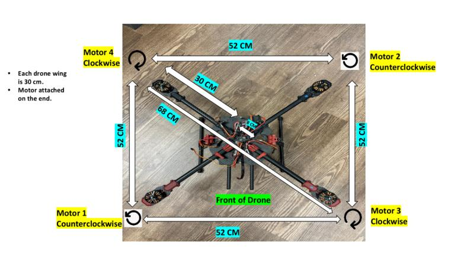
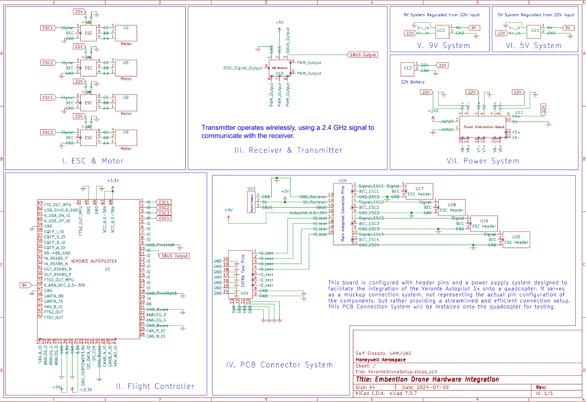
Weather Station
Developed a mobile PCB with I2C/SPI sensors, power-efficient architecture, and field-tested calibration for environmental monitoring.
- Built environmental sensor array using temperature, pressure, and wind modules.
- Developed a power-saving design using switching regulators and rechargeable cells.
- Designed the PCB in Cadence and passed DRC checks before fabrication.
- Performed accuracy tests in varied conditions to verify sensor readings.
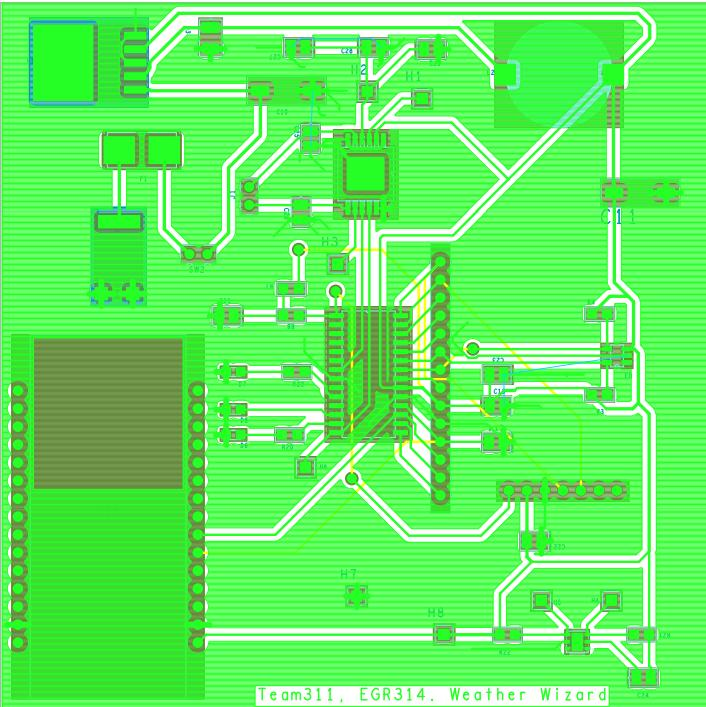
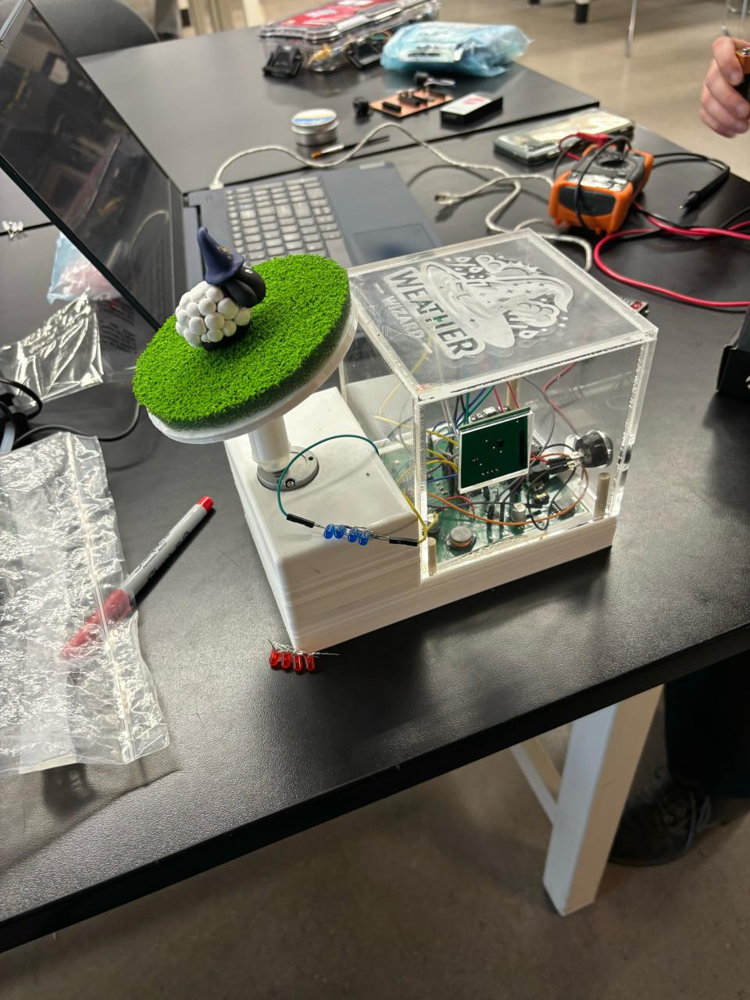
Adaptive Apparel PCB
Built a BLE-powered wearable on CY8CKIT-142 with low-power C++ firmware and user safety compliance.
- Developed BLE firmware in C++ for safe and interactive user experience.
- Integrated safety logic for use in children's wearable devices.
- Designed and tested PCB layout for manufacturability and durability.
- Optimized wireless signal strength and power draw for longer wearability.
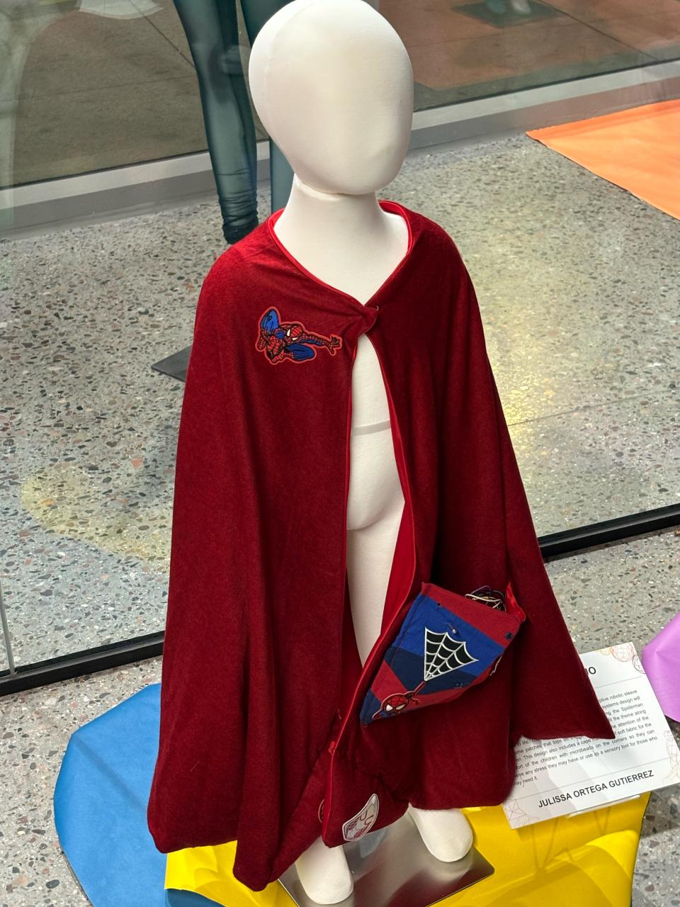
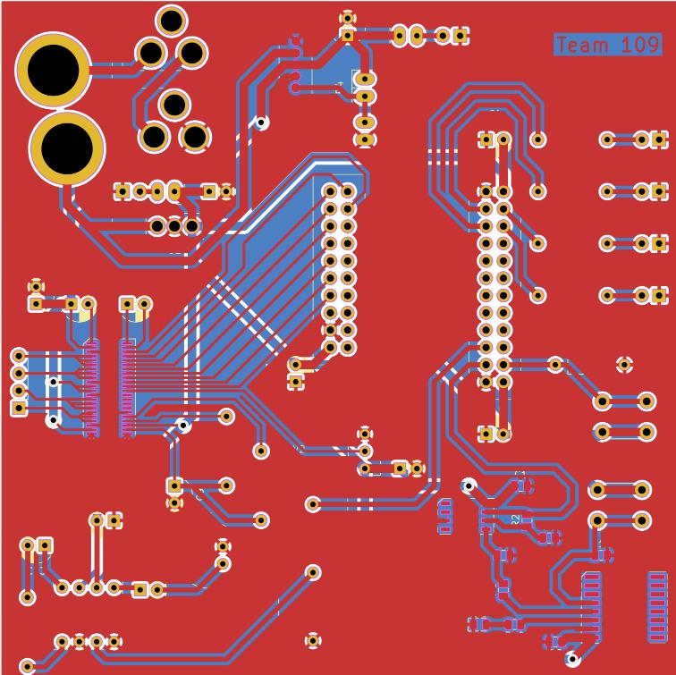
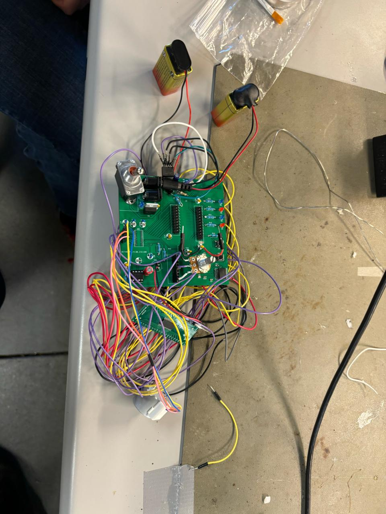
Audio Recording Circuit
Created an op-amp based audio system using ISD1700, including playback, erase, and amplification logic.
- Implemented audio processing using ISD1700 series chip.
- Added analog preamp circuit using LM741 op-amps.
- Benchmarked audio clarity and optimized op-amp gain settings.
- Enabled playback, erase, and record cycling using digital logic control.
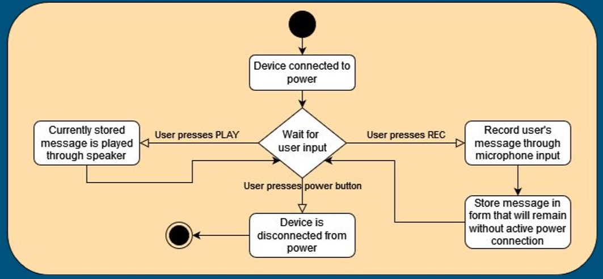
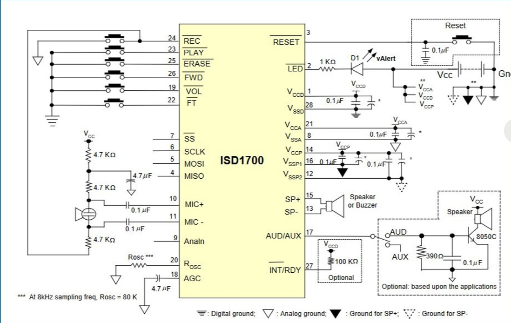
Servo-Controlled Testing System
Automated servo motion and sensor feedback with Arduino firmware and Serial Monitor controls.
- Integrated servo motors with Arduino PWM for precision stroke control.
- Added load cell and LVDT for real-time force and position tracking.
- Enabled parameter input through Serial Monitor interface.
- Programmed closed-loop system for automated test cycling.
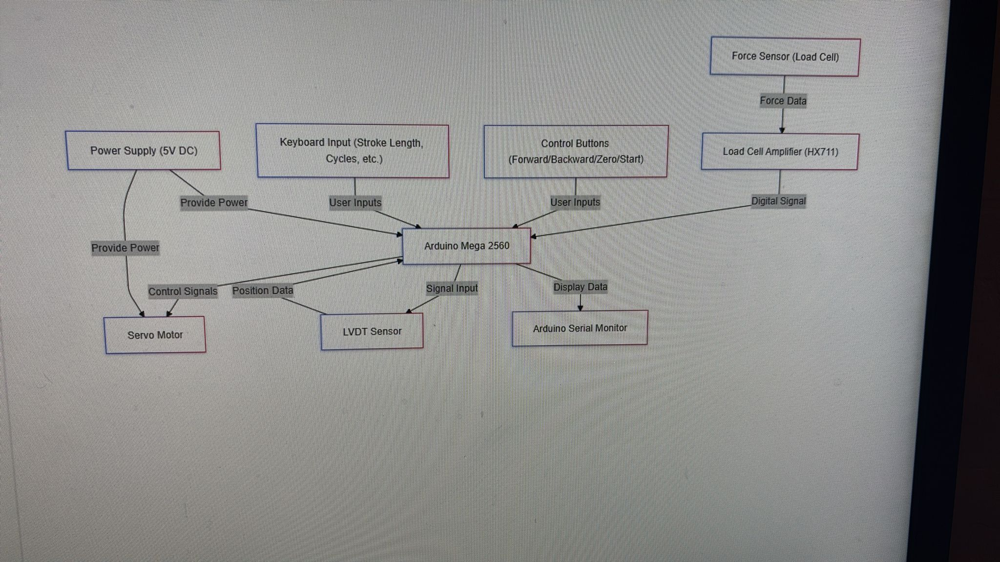
Custom Temperature Sensor
Built a PCB + I2C sensor system with LED debugging and oscilloscope testing workflows.
- Designed PCB with temperature sensor and pull-up resistors.
- Added LED output for visual status monitoring.
- Verified sensor accuracy using oscilloscope signal tracing.
- Coded C++ firmware loop to read and validate temperature readings.
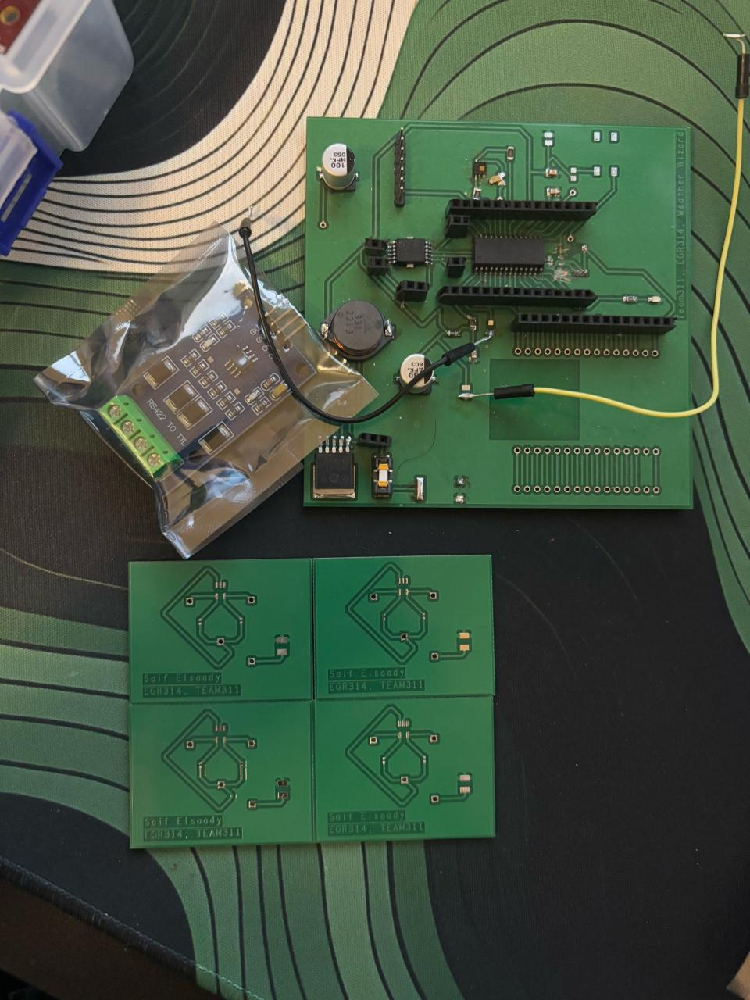
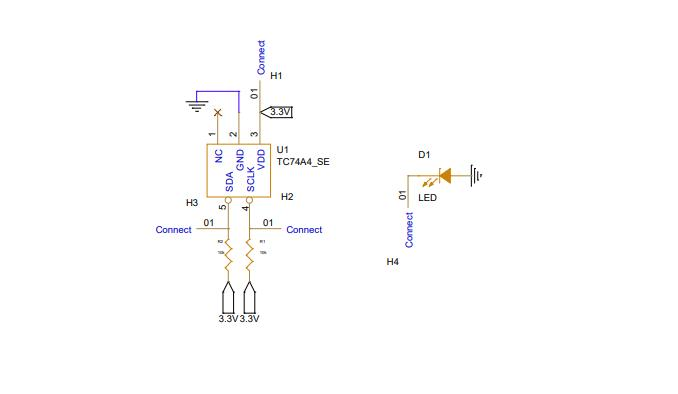
Peak Detector Network
Simulated diode-op-amp peak detectors for real-time signal measurement and testing instrumentation.
- Designed op-amp circuit for capturing signal peaks.
- Tuned component values for analog signal tracking.
- Tested design across variable input frequencies using scope.
- Applied in amplitude-modulated signal diagnostics.
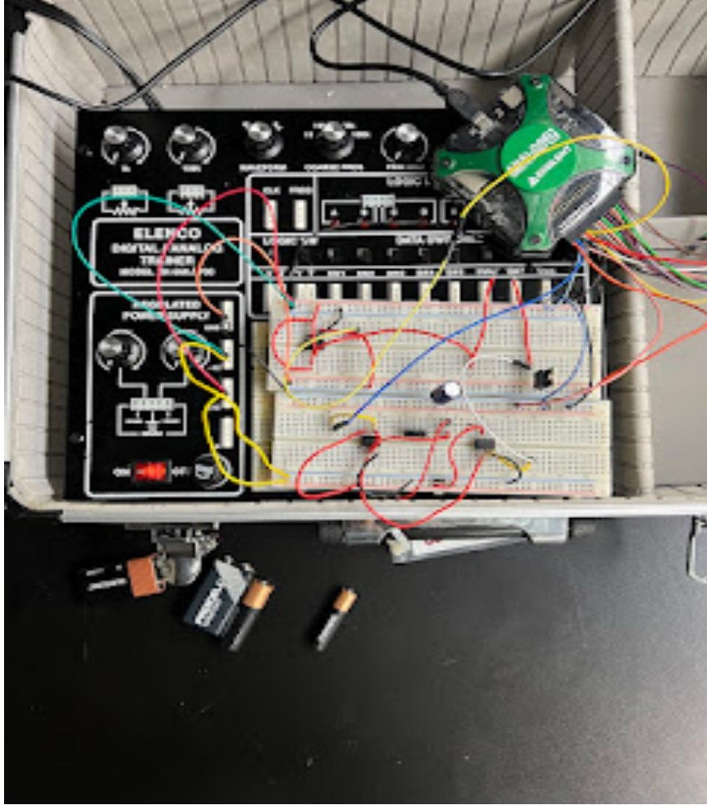
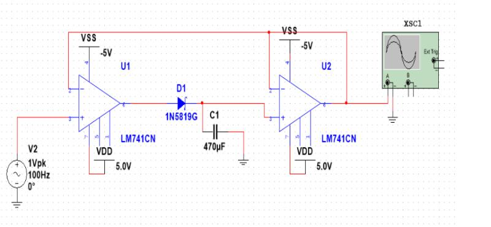
Assistive Ball Launcher
Designed a switch-activated DC motorized assistive device with torque optimization and <$40 BOM.
- Developed switch-based motor control interface.
- Designed ergonomic frame using low-cost materials.
- Optimized motor torque for consistent launching force.
- Kept total bill of materials under $40 for accessibility.
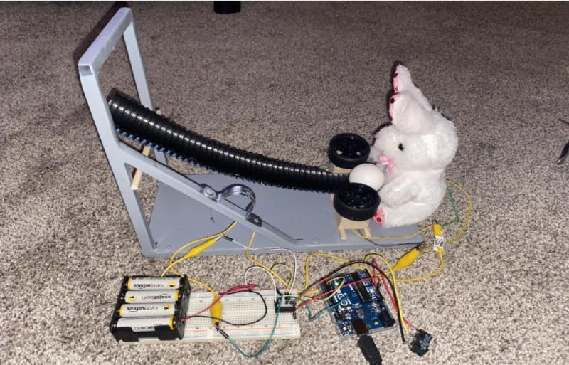
Flyback Converter Power Supply
Designed and simulated a 5V, 30W isolated power supply using a high-frequency flyback topology and MATLAB-based modeling.
- Implemented galvanic isolation and voltage conversion with a 40:1 transformer and switching architecture.
- Simulated full converter performance in MATLAB, achieving <50mV ripple and 75.65% efficiency.
- Optimized Schottky diodes, capacitors, and MOSFET selection to minimize conduction and switching losses.
- Proposed GaN-based switching and advanced PWM control to increase future efficiency beyond 85%.
Noise Monitoring Subsystem
Designed a breakout board with op-amp-based analog filtering and embedded C++ firmware for dynamic audio monitoring.
- Wrote C++ firmware to read analog signals and display real-time audio levels.
- Designed op-amp circuitry with capacitor filtering to enhance signal clarity.
- Used potentiometers to allow adjustable noise sensitivity in real-time.
- Validated system performance using oscilloscope and ATE testing tools.
Electric Skateboard
Redesigned and optimized an electric skateboard through reverse engineering and performance benchmarking.
- Performed speed, range, and braking tests to validate performance in real-world conditions.
- Redesigned key components including motor mount, wheels, and battery placement for efficiency and safety.
- Integrated headlights, carrying handle, and riding modes to improve usability.
- Applied structured test plans to verify electrical and mechanical systems met design goals.
Automated Mini Garage Door
Built a servo-powered garage door prototype with bidirectional control and basic electrical circuitry.
- Implemented servo motor system triggered by switch for door movement.
- Designed and wired the circuit using breadboard, resistors, and jumpers.
- Constructed wooden frame for structural support and safe enclosure.
- Tested motion logic for consistent up/down operation and optimized power draw.
Digital Logic Gates
Simulated 6-bit logic gate operations in Verilog to validate binary arithmetic and hardware design.
- Implemented AND, OR, XOR, NOR, and XNOR operations using register-based modules.
- Used procedural stimulus generation in initial blocks to simulate inputs and outputs.
- Monitored register changes with
$monitorto track logic behavior in real time. - Validated functional correctness of each gate using waveform inspection.
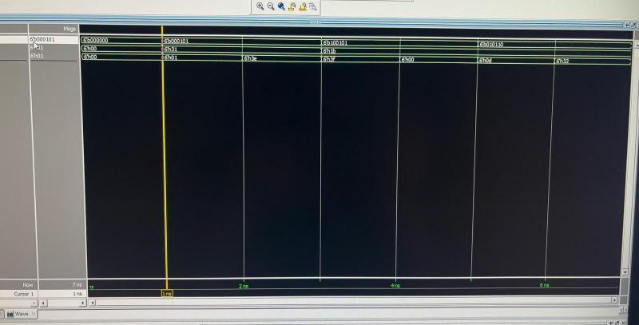
Energy Conversion Launcher
Designed and built a rubber band-powered projectile launcher, optimizing elastic energy conversion for maximum efficiency.
- Optimized energy transfer to maximize launch efficiency, reducing mechanical losses.
- Validated theoretical vs. experimental results, refining design through real-world testing.
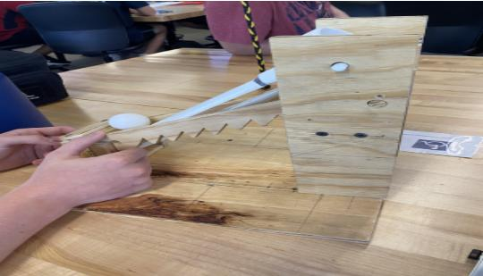
Fan Reverse Engineering
Redesigned and optimized a consumer stand fan for airflow, noise reduction, and assembly improvements.
- Optimized propeller design to minimize noise by applying a thin plastic coating for dampening vibrations.
- Redesigned fan cage for easy disassembly, improving maintenance and air quality by reducing dust buildup.
- Enhanced airflow distribution by modifying the cage geometry, increasing cooling efficiency.
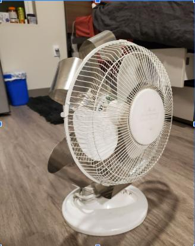
Microgrid & Power Flow Design
Used Xendee to simulate peak load, islanding, and voltage regulation in a hybrid solar/wind/diesel grid in Oahu.
- Developed a GIS-based microgrid layout, modeling load profiles and renewable energy potential using real-world data.
- Performed cost-benefit analysis using Lazard's levelized cost benchmarks for optimal long-term affordability.
- Implemented peak shaving with battery storage and renewables to reduce dependency on the grid.
- Conducted 3-day resilience analysis to ensure critical load coverage with backup generation.
- Optimized dispatch scheduling to minimize operating costs while maintaining grid stability.
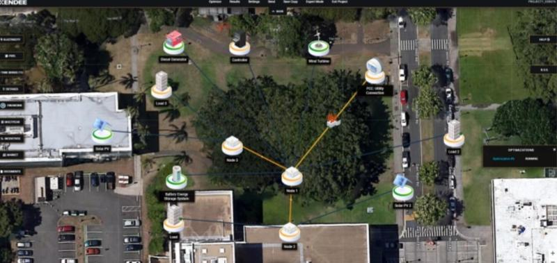
Power Flow Analysis | Power Systems Engineering
Simulated a resilient hybrid power grid for Oahu, Hawaii, integrating solar, wind, and diesel assets under both connected and islanded modes.
- Created a one-line schematic in Xendee with feeders, buses, transformers, and microgrid inverters.
- Performed peak load flow analysis to optimize transformer and cable sizing and correct voltage violations.
- Simulated islanding scenarios to maintain voltage and reactive power balance using local generation.
- Compared system behavior under grid-connected vs. islanded conditions with variable demand profiles.
- Validated critical load coverage and power quality for uninterrupted operations during outages.
EV Charging Cybersecurity
Simulated attack vectors on onboard chargers using Arduino + MATLAB for both hardware and protocol testing.
- Built hardware simulation to model EV charging protocol.
- Wrote MATLAB scripts to simulate attack scenarios.
- Emulated CAN bus signal interference and spoofing.
- Verified vulnerabilities through test scenarios and logging.
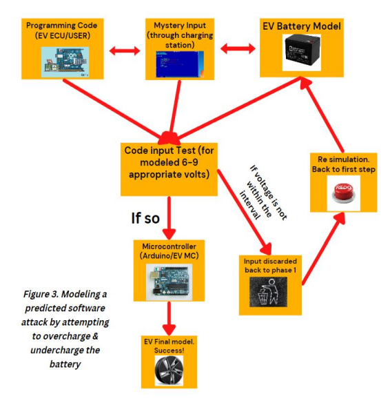